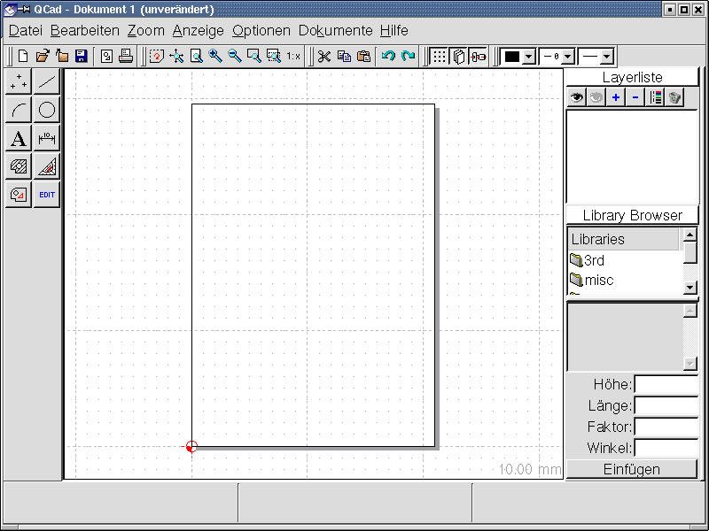
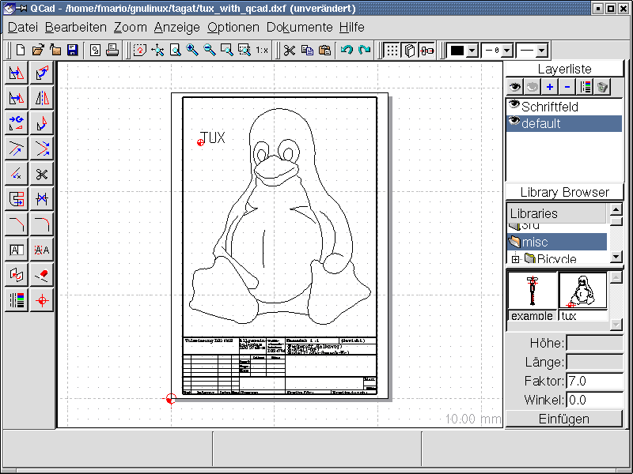
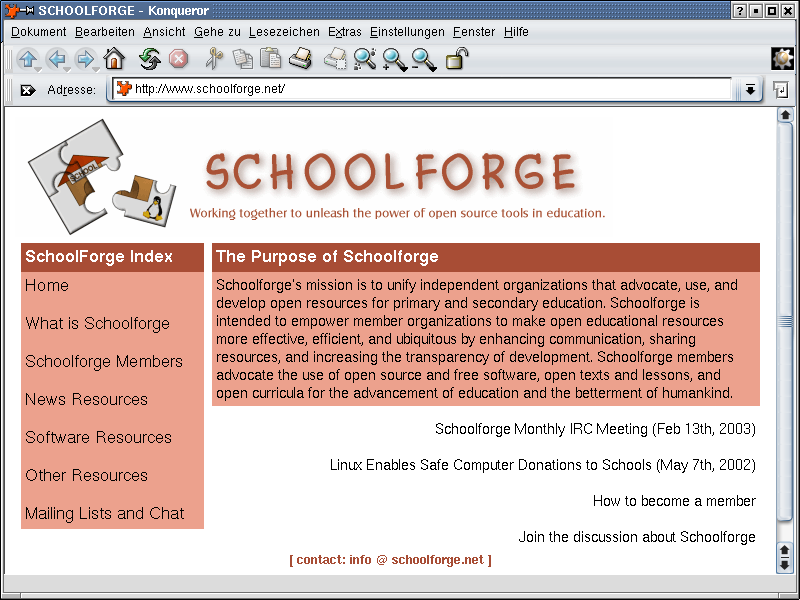

Die Kolumne TUX&GNU@school [2] berichtet mehr oder minder regelmässig jeweils über ein Stück freie Lernsoftware, eine Homepage zum Thema und eine leicht umzusetzende Idee. Diesen Monat geht es um QCad [3], ein freies 2D-CAD Programm, um die Homepage von Schoolforge.net [4], und um die Idee "Kleinkinder machen Musik".
Herzlich willkommen zur sechsten Ausgabe. Mittlerweile ist es schon ein Jahr her, dass ich die erste Ausgabe [5] von TUX&GNU@school veröffentlicht habe und wir sind trotzdem erst bei der sechsten. Aus dem Versuch "monatlich zu berichten" wurde wohl nichts und darum habe ich dies in der Einleitung auch nach "mehr oder minder regelmässig" geändert. Doch der Versuch soll aufrecht erhalten werden, und sollte es mir gelingen, einen regelmässigen, ggf. monatlichen Zyklus einzuhalten, werde ich die Einleitung wieder ändern. An dieser Stelle möchte ich noch darauf hinweisen, dass die Kolumne nun auch auf Französisch [6] erhältlich ist. Dies ist Anne-Marie Mahfouf zu verdanken, für deren Arbeit ich mich hiermit ganz herzlich bedanken möchte. Weiterhin wird die TGS von nun an auch als Newsletter zu abonnieren sein. Eine Einschreibemöglichkeit und weitere Informationen dazu findet ihr auf unserer Homepage [7]. Nun aber genug Neuigkeiten zu uns selbst, ab zum ersten Thema.
Bisher wurde an dieser Stelle immer Software für die Unter- und Mittelstufe vorgestellt. Heute soll darum mal ein Programm Erwähnung finden, welches wohl eher für Schülerinnen oder Lehrer der Oberstufe geeignet ist. Weiterhin wäre QCad [3] sicher auch für technische Fachhochschulen und Ingenieurschulen von Interesse.
Getestet habe ich die Version 1.4.7 vom 24. März 2001 unter Debian GNU/Linux [8] testing, wobei die aktuelle Ausgabe die Versionsnummer 1.5.4 trägt. Als Lizenz hat der Autor Andrew Mustun die GNU GPL ausgewählt. Unter Debian und debian-basierten Distributionen ist das Programm mittels "apt-get install qcad" zu installieren. Unter rpm-basierten Distributionen benutzt man den entsprechenden Paketmanager oder gibt auf der Kommandozeile folgende Befehl ein: "rpm -i <qcad-paketname>.rpm". Bevor ich aber mit der eigentlichen Vorstellung oder Betrachtung des Programmes anfange, muss ich darauf hinweisen, dass meine Fähigkeiten und Kenntnisse im CAD-Bereich nicht gut genug sind, um der Qualität und dem Umfang von QCad gerecht zu werden. Darum an dieser Stelle nur ein kurzer, laienhafter Überblick. Wer mehr dazu erfahren will, sei auf die Homepage [3] und die umfangreiche und mehrsprachige Dokumentation [9] hingewiesen. Auch das Programm selber wurde übrigens auf mindestens ein Dutzend Sprachen übersetzt. Dies ist auch gleich der, neben der Einstellung der Masseinheit, erste Punkt, den man beim ersten Start von QCad an die eigenen Bedürfnisse anpassen kann.

Danach erblickt man sogleich die Oberfläche des Programms (siehe Abbildung 1), aufgeteilt in die Menü- und Symboleiste am oberen Rand, die Funktionsleiste am linken Rand und die Layerliste und den Library-Browser am rechten Rand. Wird auf ein Funktionssymbol geklickt, erscheint eine neue Reihe von Unterfunktionen, wobei man jeweils mit einem Rechtsklick bzw. dem Drücken der Taste <ESC> zurück zur vorherigen Funktionsgruppe bzw. zu den Grundfunktionen kommt. Zu den Grundfunktionen gehören dabei: Punkte, Linien, Bögen, Kreise, Text konstruieren, Bemassung, Schraffuren erstellen, Messen, Markieren und Editieren. Sehr positiv ist mir dabei aufgefallen, dass, sobald man sich für eine Funktion entschieden hat, in der Mitte der unteren Statusleiste angegeben wird, was die linke und rechte Maustaste ab nun bewirken. Rechts daneben ist dabei kurz die angewählte Funktion beschrieben. Auf der linken Seite der Statusleiste werden bei entsprechend ausgewählten Funktionen die absoluten und relativen Koordinaten der Mauszeigerposition angegeben.
Hat man sich dann ein wenig ins Programm und seine Möglichkeiten eingelesen, kann es auch schon losgehen mit der Konstruktion eigener Skizzen. Aus der beiligenden Symbol- und Skizzen-Bibliothek können einige vorgefertigte Skizzen und Muster ausgewählt und eingefügt werden. Enthalten sind dabei ein paar Kugellager-, Schrauben- und Fahrradteile-Zeichnungen. Natürlich darf bei einem Programm für GNU/Linux auch der Pinguin TUX nicht fehlen (siehe Abbildung 2). Weiterhin sind ein paar Formularvorlagen enthalten. In der Symbolleiste unter dem eigentlichen Menü finden sich hauptsächlich Buttons für Dateifunktionen (Öffnen, Speichern, etc.), verschiedene Ansichtsmöglichkeiten, die obligatorischen Rückgängig- und Wiederherstellen- Knöpfe, sowie ein paar Funktionen zur Darstellung der Linien oder des Arbeitsblattes selber.

Hat die angehende Maschinenbauzeichnerin dann ihre Skizze fertiggestellt, kann sie diese in den Formaten Drawing Exchange (*.cxf), EPS (*.eps) oder Font (*.cxf) abspeichern. QCad kann zusätzlich zu den bereits genannten (exklusiv EPS) auch Dateien in den Formaten Microstation (*.dgn) und HPGL (*.plt *.hpgl *.inc) öffnen und bearbeiten. Wie man vielleicht nun sieht, ist die Software "nur" in technischen Berufen und Schulen sinnvoll einsetzbar, wobei es vielleicht nur mal einen mutigen Lehrer bräuchte, der sich mit QCad auseinandersetzt und es vielleicht im Geometrieunterricht einzusetzen versuchte.
Soweit zur Vorstellung der 2D-CAD Software QCad. Es bleiben eigentlich nur noch zwei Dinge zum Schluss: Erstens, QCad wurde auf zahlreiche Plattformen portiert, es läuft also nicht nur auf dem (meist) heimischen ix86er. Und zweitens, recht herzlichen Dank an Mustun und seine zahlreichen Helfer [10] für dieses wunderbare Stück Software.
Nun aber weiter zur Homepage dieser Ausgabe.
Dieses Mal möchte ich die Organisation bzw. die Webseite schoolforge.net [4] vorstellen. Da diese zur Zeit aber nur in Englisch vorliegt, soll diese Vorstellung auch gleich anhand der Struktur der Homepage stattfinden. Sie ist daher in folgende sieben Sektionen aufgeteilt: Home, What is Schoolforge, Schoolforge Members, News Resources, Software Resources, Other Resources und Mailing Lists and Chat. Bevor ich aber mit der eigentlichen Vorstellung beginne, sollte ich darauf hinweisen, dass ein Mitmachen bei Schoolforge zwingend voraussetzt, dass man, bzw. die Kontaktperson zu Schoolforge, Englisch lesen und schreiben kann, zumindest ansatzweise.
Auf der Einstiegsseite [4] (siehe Abbildung 3) findet man nicht viel, aber doch genug, um sich einen ersten Überblick zu verschaffen. Am oberen Rand, wie auch auf allen folgenden Seiten, befindet sich das Logo von Schoolforge. Links darunter sieht man die obligatorische Navigationsleiste mit den sieben oben genannten Punkten und rechts davon dann den eigentliche Inhalt der entsprechenden Seite. Auf der ersten Seite ist dies eine kurze Einführung zu Schoolforge, gefolgt von den aktuellen News. Besitzt eine Seite noch mehr Navigationspunkte, so sind diese ebenfalls unterhalb der normalen Navigationsleiste angeordnet. Schoolforge besteht übrigens schon seit dem 8. Januar 2002, ist also bald einmal eineinhalb Jahre alt.

Ist man das erste mal auf schoolforge.net, interessiert man sich sicherlich für den Punkt "What is Schoolforge", was nichts anderes heisst als, richtig geraten: "Was ist Schoolforge" [11]. An dieser Stelle wird darauf hingewiesen, dass Schoolforge keine neue Organisation ist, sondern nur quasi eine Dachorganisation oder ein Kommunikationskanal für verschiedene Gruppierungen mit dem gemeinsamen Ziel, offene Resourcen an den Schulen zu fördern. Es geht also nicht primär nur um Freie Software. Sicherlich auch wichtig für eine zukünftige Mitgliedschaft ist, dass es nicht möglich ist, als Einzelperson beizutreten. Mitglied können nur Organisationen werden. Diese bestimmen dann aber eine Kontaktperson, welche auch die Stimme der entsprechenden Organisation bei Abstimmungen vertritt. Ganz allgemein versucht Schoolforge Kräfte zu vereinen, doppelt gemachte Arbeit zu vermeiden und die Kommunikation unter den einzelnen Gruppierungen zu verbessern. Weitere Verweise unter diesem Punkt sind einerseits die "Schoolforge Operating Procedures" [12], welche bestimmen, was man als Mitglied zu tun und zu lassen hat, und dann der Punkt "Becoming a Member" , bzw. "Wie werde ich Mitglied ?" [13]. Dort ist kurz beschrieben, wo und wie man sich melden muss, um Mitglied zu werden.
An dieser Stelle möchte ich doch noch ein wenig detaillierter auf die "Schoolforge Operating Procedures" eingehen. Die Mitgliedschaft bei Schoolforge bedeutet primär eine verbesserte Kommunikation, wobei die Mailing Liste hierbei der zentrale Anlaufspunkt ist. Schoolforge soll andererseits auch ein einheitliches Gesicht nach aussen sein. Alle Mitglieder sollten als Gegenleistung auf ihren Homepages Links und Verweise zu Schoolforge.net platzieren. Neben dieser relativen geringen Massnahme besitzen die einzelnen Mitglieder aber noch ein wenig mehr Verantwortung. Die entsprechende Kontaktperson bzw. die ganze Gruppe sollte aktiv mitarbeiten, d.h. immer mal wieder was von sich auf der Mailing Liste hören lassen. Es wird auch jeden Monat ein neuer Stimmenzähler gewählt, welcher bei Abstimmungen für die korrekte Auswertung zuständig ist. Es ist auch so, dass ein Mitglied von Schoolforge für die Webseite Schoolforge.net und deren Pflege verantwortlich ist. Der letzte Punkt, den ich hier erwähnen möchte, ist die Tatsache, dass man neue Ideen und Vorhaben doch vorher auf schoolforge.net publik machen und diskutieren sollte, um doppelte Arbeit zu vermeiden und ggf. schon auf bereits Vorhandenem aufzubauen.
Dem dritten Link in der Navigationsleiste folgend gelangt man auf eine Seite, auf der sämtliche Mitglieder in alphabetischer Reihenfolge [14] aufgelistet sind. Ganz zuoberst findet sich auch noch gleich ein Link, der einen zu einer etwas detaillierteren Liste der Mitglieder [15] führt. Zur Zeit sind dies über 140 Organisationen. Auf der Seite zu "News Resources" [16] finden sich Links zu Webseiten, welche regelmässig Neuigkeiten zum Thema anbieten. Dazu gehören z.B. Opensourceschools.org [17] als kleines Journal, seul.org/edu [18], welche alle zwei Wochen einen Report [19] herausgeben oder eben die schoolforge-eigene Mailing-Liste [20]. Auch bei den "Software Resourcen" [21] gibt es hauptsächlich Links zu entsprechenden Projekten, wobei ich hier auszugsweise folgende erwähnen möchte: den Applikations-Index [22] von SEUL/edu [17], das Debian [7] Unterprojekt "Debian Jr." [23] und das KDE Edutainment Project [24], dessen Kontaktperson zu Schoolforge übrigens für die Übersetzung auf Französisch von "TUX&GNU@school" [6] verantwortlich ist. Links auf der Seite der "Software Resourcen" gibt es noch eine aktuelle Auflistung der neusten Einträge in der Applikations-Datenbank von SEUL/edu.
Im zweitletzten Punkt unter "Other Resources" (Andere Resourcen) [25] befinden sich noch ein paar Links zu weiteren interessanten und hilfreichen Webseiten zum Thema. Dazu gehört die Datenbank mit Erfolgsgeschichten bzw. Fallstudien zu Linux im Schuleinsatz [26], eine Linksammlung zum Thema [27] und eine Datenbank zum Thema "Voraussetzungen, Probleme und Möglichkeiten" zum Einsatz von Technologie im Schulzimmer [28]. Und schliesslich findet man beim letzten Punkt Informationen zur Mailing Liste [20], wobei es auch einen Link zum Online-Archiv gibt. Weiterhin ist dort angegeben, wie, wann und wo es möglich ist, Leute im IRC zu treffen.
Nun, dass war eine kurze Vorstellung von Schoolforge, einer meiner Meinung nach sehr nützlichen Organisation zum Thema "GNU/Linux an Schulen", jetzt aber weiter zur Idee dieser Ausgabe.
An dieser Stelle wurde bis anhin immer eine kleine Idee vorgestellt, die der geschickte Programmier in Null-Komma-Nichts implementieren könnte. Im Moment bin ich mir allerdings nicht mehr ganz sicher, ob dies überhaupt noch von Interesse ist, da ich für die letzten paar Ideen gar keine Implementierungen mehr erhalten habe. Waren die Ideen vielleicht zu banal, zu schwierig, ist dies gar nicht interessant oder was denkt ihr darüber ? Bitte schickt mir eure Meinung und Ideen dazu an [1]. Noch interessanter und wichtiger fände ich es allerdings, wenn die Ideen und Wünsche direkt aus der Praxis, d.h. von Lehrern und Lehrerinnen kämen, die selber Schule geben und dabei noch besser wüssten, was ihnen noch fehlt.
Nichtsdestotrotz aber an dieser Stelle die Idee dieser Ausgabe, welche mir beim Spielen mit Tuxpaint [29] [30] gekommen ist. Wie sicherlich all jene wissen, die schon mal Tuxpaint ausprobiert haben, sind einige Stempel mit Sounds und Geräuschen unterlegt. Klickt man nun mehrere Male hintereinander auf die entsprechenden Symbole und zieht dabei auch noch gleich mehrere Stempel mit ein, so ergibt sich doch von Zeit zu Zeit ein interessantes Klangmuster. Es wäre doch sicher ein leichtes, daraus ein kleines Programm zu schreiben, welches verschiedene Knöpfe enthält, welche mit unterschiedlichsten Sounds und Geräuschen unterlegt sind, auf die man nach Herzenslust klicken könnte. Eine Aufnahmemöglichkeit würde die ganze Idee noch abrunden, und den zukünftigen Mozarts und Beethovens ein weiteres nützliches Tool in die Hand geben.
Ich würde mich darum freuen, bis zum nächsten Mal was aus dieser Richtung zu hören und gehe nun weiter zu den News dieser Ausgabe.
Vor einigen Wochen wurde die Version 1.3 von FREEDUC [31] freigegeben. Bei FREEDUC handelt es sich um eine auf Knoppix [32] basierende Distribution, welche auf die Vorführung freier Lernsoftware ausgelegt ist. Welche Software genau installiert ist erfahrt ihr hier [33] (Achtung: *.txt.gz-Datei).
Seit der ersten Bekanntgabe [34] sind zwar schon einige Wochen oder gar Monate vergangen, trotzdem möchte ich es aber hier nochmals erwähnen. An Österreichischen Schulen scheint es nun möglich zu sein, eine GNU/Linux-Zertifizierung ablegen bzw. erwerben zu können.
Vor einigen Wochen lancierte das BSI (Bundesamt für Sicherheit in der Informationstechnologie) [35] eine Informationswebseite [36] aus dem eigenen Hause. Die dort zu findenden Informationen gehören zwar nicht direkt zu Freier Software oder GNU/Linux, sind aber trotzdem sehr interessant und leicht verständlich. Es werden allgemeine Begriffe wie "Internet" und dessen Funktionsweise erklärt, auf der anderen Seite aber auch auf Sicherheitsaspekte in jenem eingegangen. An dieser Stelle möchte ich dann auch mal auf die, meiner Meinung nach, genial einfache Erklärung des Internets aus den Sachgeschichten der deutschen "Sendung mit der Maus" [37] verweisen. Zu finden ist dieser kurze und sehr leicht verständliche Film hier [38].
Erst vor einigen Wochen veröffentlichte Bruno Coudoin die Version 3.0, gefolgt von GCompris 3.1 vor einigen Tagen. Die wichtigsten Änderungen sind dabei das Umgehen eines Fehler in der gnome-canvas-Bibliothek, welcher bis anhin leider nicht behoben wurde und die Möglichkeit, Boards nun in Python zu schreiben. Weiterhin gibt es natürlich wie bei jeder neuen Version auch ein paar neue Boards, dessen Details ihr aber besser der Homepage von GCompris [39] entnehmt. An dieser Stelle möchte ich es dann auch nicht auslassen, Bruno zum Erfolg [40] bei der TropheeduLibre.org [41] zu gratulieren. Nur weiter so.
Auch KTouch gibt es seit einigen Wochen in einer neuen Version, nämlich als 1.3. Die genauen Änderungen und Features entnehmt ihr am besten der Homepage [42].
SkoleLinux [43] ist eine auf Debian basierende Distribution aus Norwegen, welche speziell auf den Einsatz in Schulen ausgelegt ist. Mittlerweile gibt es dazu auch eine deutsche Homepage [44] und ein deutsches Team, welches die Distribution an die lokalen Gegebenheiten anpassen will. Leider gibt es von der erfolgsversprechenden Distribution noch kein stabiles Release, doch es wurde vor eingen Wochen trotzdem die Vorversion pre38 zum Testen veröffentlicht. SkoleLinux ist übrigens die erste mir bekannte Distribution, welche den neuen Debian-Installer [45] produktiv einsetzt.
Und zum Schluss für dieses Mal, bevor ich es vergesse: Dies ist die erste Version von TUX&GNU@school, die auch als OGG Vorbis erscheint [7] ;-) Hört mal rein. Tschüss und bis zum nächsten Mal ...
[1] Kritik, Fragen, Kommentare,
Ideen und mehr bitte an: foxman@lugo.ch
[2] Homepage von
TUX&GNU@school:
www.unormal.org/alis/tagatschool6.de.html
[3] Homepage von QCad:
www.QCad.org
[4] Homepage von
Schoolforge.net: www.Schoolforge.net
[5] Erste Ausgabe
von TUX&GNU@school
[6] TUX&GNU@school
auf Französisch
[7] Einschreibemöglichkeit
für den TUX&GNU@school-Newsletter
[8] Homepage von Debian:
www.debian.org
[9]
Mehrsprachige Dokumentation von QCad
[10] Entwicklerliste von
QCad
[11] Schoolforge.net
-> "Was ist Schoolforge"
[12] Schoolforge.net ->
"Schoolforge Operating Procedures"
[13] Schoolforge.net ->
"Wie werde ich Mitglied ?"
[14] Schoolforge.net ->
"Schoolforge Mitglieder" (alphabetische Reihenfolge)
[15] Detailliertere Liste der
Schoolforge-Mitglieder
[16] Schoolforge.net
-> "News Quellen"
[17] OpenSourceSchools.org
- News zu OpenSource in der Schule und Bildung
[18] Homepage von SEUL/edu:
www.seul.org/edu
[19] Reports von
SEUL/edu
[20] Schoolforge.net ->
"Mailinglisten und Chat"
[21] Schoolforge.net ->
"Software Quellen"
[22] Applikations-Index von
SEUL/edu
[23] Debian
Unterprojekt "Debian Jr."
[24] Homepage des KDE Edutainment
Projekt: edu.kde.org
[25] Schoolforge.net ->
"Andere Quellen"
[26] Datenbank von
SEUL/edu mit Erfolgsgeschichten bzw. Fallstudien zu Linux im
Schuleinsatz
[27] Linksammlung von
SEUL/edu
[28] Datenbank von SEUL/edu
zum Thema "Voraussetzungen, Probleme und Möglichkeiten" zum
Einsatz von Technologie im Schulzimmer
[29] Homepage
von Tuxpaint: www.newbreedsoftware.org/tuxpaint
[30] Fünfte
Ausgabe von TUX&GNU@school
[31] Homepage von
FREEDUC
[32] Homepage von Knoppix:
www.Knoppix.de
[33] Paketliste
von FREEDUC
[34] "Linux-Zertifikate
für Österreichs Schüler" auf Pressetext.at
[35] Homepage des BSI (Bundesamt
für Sicherheit in der Informationstechnologie):
www.bsi.de
[36] Neue
Informationswebseite des BSI: www.BSI-fuer-Buerger.de
[37] Homepage der
deuschten "Sendung mit der Maus":
www.Sendung-mit-der-Maus.de
[38] Downloadlink zum
Sachgeschichten-Video "Internet"
[39] Homepage von
GCompris: www.ofset.org/GCompris
[40] GCompris auf
tropheesdulibre.org
[41] TropheeduLibre.org
(französisch)
[42] Homepage von KTouch:
Ktouch.sourceforge.net
[43] Homepage von SkoleLinux:
www.SkoleLinux.no
[44] Deutsche Homepage von
SkoleLinux: www.SkoleLinux.de
[45] Eine
Homepage des neuen Debian-Installers
Mario Fux schloss 1999 das PrimarlehrerInnenseminar in Brig ab, wonach er die mathematisch-naturwissenschaftliche Matura nachholte. Zusammen mit zwei Kollegen gründete er Ende 2001 die ALIS - Arbeitsgruppe Linux an Schulen. Und wenn er seine Zeit einmal nicht vor dem PC verbringt, sitzt er an seinem Naturteich in den Bergen.
Dieses Dokument steht unter der GNU Free Documentation License und kann unter deren Bedingungen weiterverwendet werden.
Copyright (c) 2002 Mario Fux. Permission is
granted to copy, distribute and/or modify this document under the
terms of the GNU Free Documentation License, Version 1.2 or any
later version published by the Free Software Foundation; with no
Invariant Sections, no Front-Cover Texts, and no Back-Cover
Texts.
A copy of the license can be found at http://www.gnu.org/licenses/fdl.html.